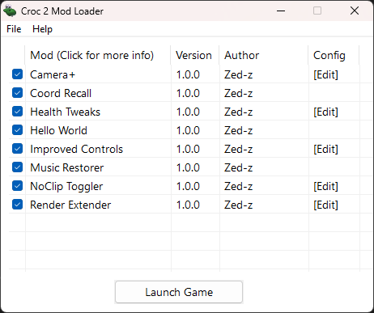
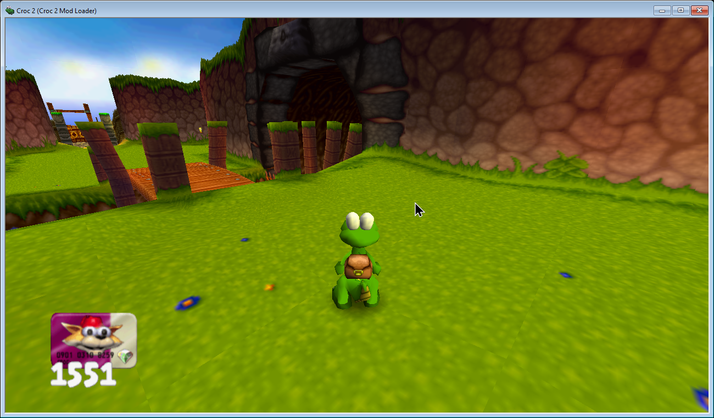
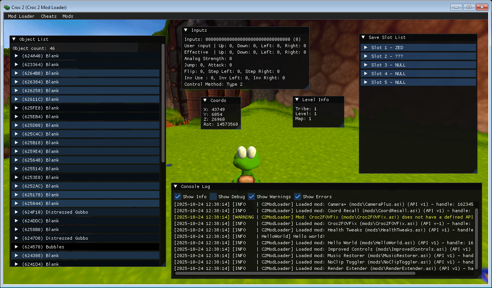
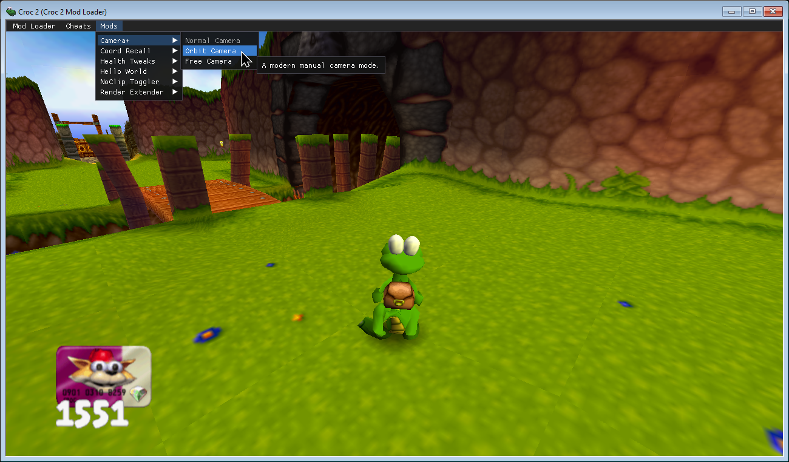
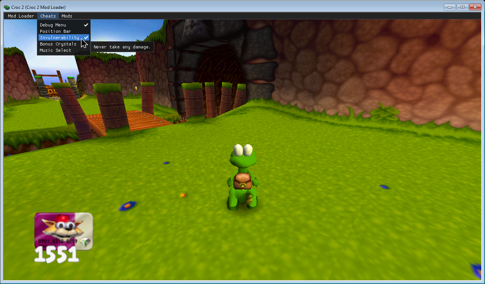

Features
Below are the main features built into Croc 2 Mod Loader.
Game launcher
Shows a launcher before starting the game. There, you can enable and disable your mods and change their settings!

Mouse uncapture
Optionally, the loader can overwrite some game code responsible for capturing the mouse in the game window and making it visible. When enabled, the game never captures your mouse and acts like any other window. Cursor freedom at last!
Big thanks to hdc0 for the game insight that made this possible!

Custom UI overlay
With the help of ocornut's Dear ImGui, the game can display custom UI elements, providing a look into the game's inner workings.

Mod loading
Croc 2 Mod Loader can load .asi mod files that are able to change the game's behavior and even override some assets. Mods can also add options to the menu bar for easy access to different features!
Mods are written in C++ with the help of the provided modding API.

Cheat code management
Did you know that Croc 2 has cheat codes you can type in on the main menu? They're neat, but pretty tedious to have to type out every time you launch the game.
With Croc 2 Mod Loader, you can manage them with UI options. They also get saved across play sessions!
